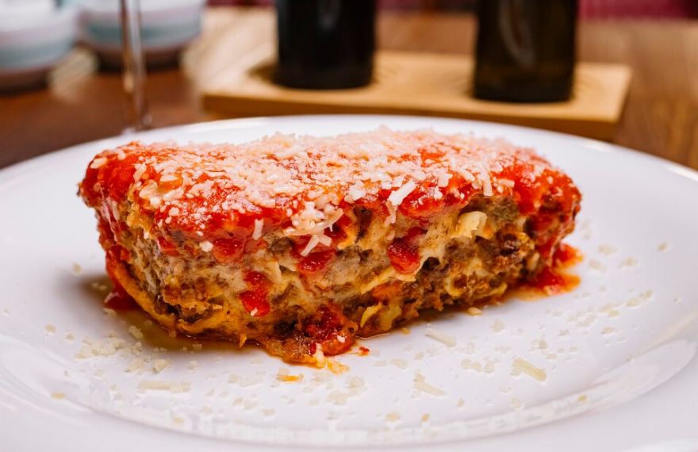

Lasagna is a classic Italian dish known for its rich layers of flavor and comforting appeal. It features wide, flat pasta sheets layered with a hearty meat or vegetable sauce, creamy béchamel or ricotta cheese, and plenty of melted mozzarella and Parmesan. Baked to perfection, lasagna develops a golden, bubbling top and a savory aroma that fillsthe kitchen.
Traditional lasagna often includes a slow-cooked ragù made with ground beef or pork, onions, tomatoes, garlic, and Italian herbs. However, there are many delicious variations, including vegetarian versions with spinach, mushrooms, or zucchini, and even vegan options using plant-based cheeses and sauces.
Lasagna is a favorite for family gatherings, special occasions, or cozy dinners at home. Its rich, satisfying taste and layered texture make it a timeless comfort food that appeals to all ages. Served with a side of garlic bread or a fresh green salad, lasagna is a complete and hearty meal.
Whether you're enjoying a traditional recipe or trying a modern twist, lasagna offers warmth, flavor, and a little taste of Italy in every bite. It's not just a dish—it's a celebration of home-cooked goodness.
For the Meat Sauce:
For the Cheese Layer:
Other:
1. Prepare the Meat Sauce:
2. Prepare the Cheese Mixture:
3. Preheat the Oven:
4. Assemble the Lasagna:
5. Bake:
6. Rest and Serve: